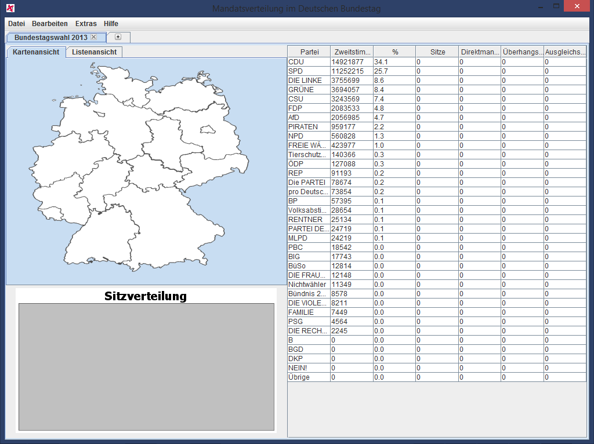

Erster Start
Beim Start des Programms wird die Bundestagswahl 2013 automatisch geöffnet, sodass
man gleich anfangen kann, das Programm zu verwenden. Das Hauptfenster sieht folgendermaßen
aus:

Das Programmfenster enthält folgende Elemente:
- Menü
- Karten-/Listenfenster
- Tabellenfenster
- Diagrammfenster
Dabei unterscheidet das Programm unter drei verschiednen Zuständen:
- Bundesansicht: Dieser Zustand trifft ein, wenn Deutschland in der Listenansicht ausgewählt ist,
oder auch wenn das Programm startet. Es zeigt dabei im Tabellenfenster die Anzahl der Zweitstimmen,
Sitze, Direktmandate, Überhangsmandate und Ausgleichsmandate an. Im Diagrammfenster dagegen
wir die endgültige Sitzverteilung in Form eines halben Kuchendiagramms angezeigt.
- Landesansicht: Beim Klick auf ein Bundesland in der Listen- oder Kartenansicht wechselt das
Tabellenfenster den Inhalt. Außerdem wird im Diagrammfenster die Prozentualen Anteile der fünf
stärksten Parteien des betroffnen Bundeslandes angezeigt. Dies wird durch ein Balkendiagramm
dargestellt.
- Wahlkreisansicht: Die Wahlkreisansicht zeigt welche Partei wie viele Erststimmen erhalten hat
und welche Partei in einem Wahlkreis einen Direktmandaten erhalten hat. Das Ändern der
Erststimmen ist nur in dieser Ansicht möglich.
Karten-/Listenansicht
Die Kartenansicht zeigt, welche Partei in einem bestimmten Bundesland die meisten Zweitstimmen
hat. Dies wird gekennzeichnet durch die Farbe des Bundeslandes.
Man kann auf die einzelnen Bundesländer klicken, sodass man in die "Bundesansicht" wechselt.
Die Listenansicht erlaubt es auch in die Bundesansicht als auch in die Wahlkreisansicht zu wechseln.
Hierfür muss lediglich das erwünschte Bundesland oder Wahlkreis angeklickt werden.